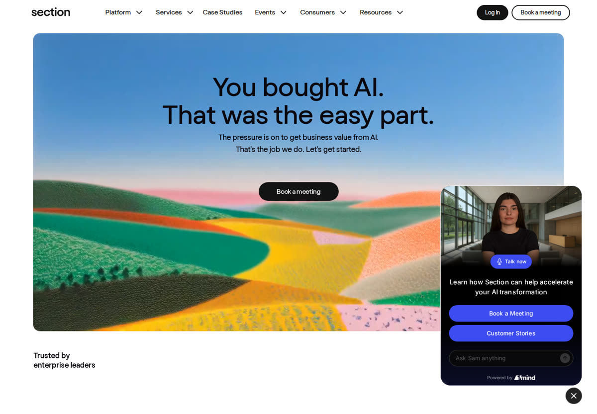
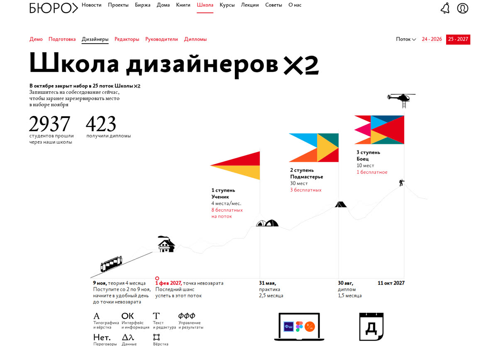
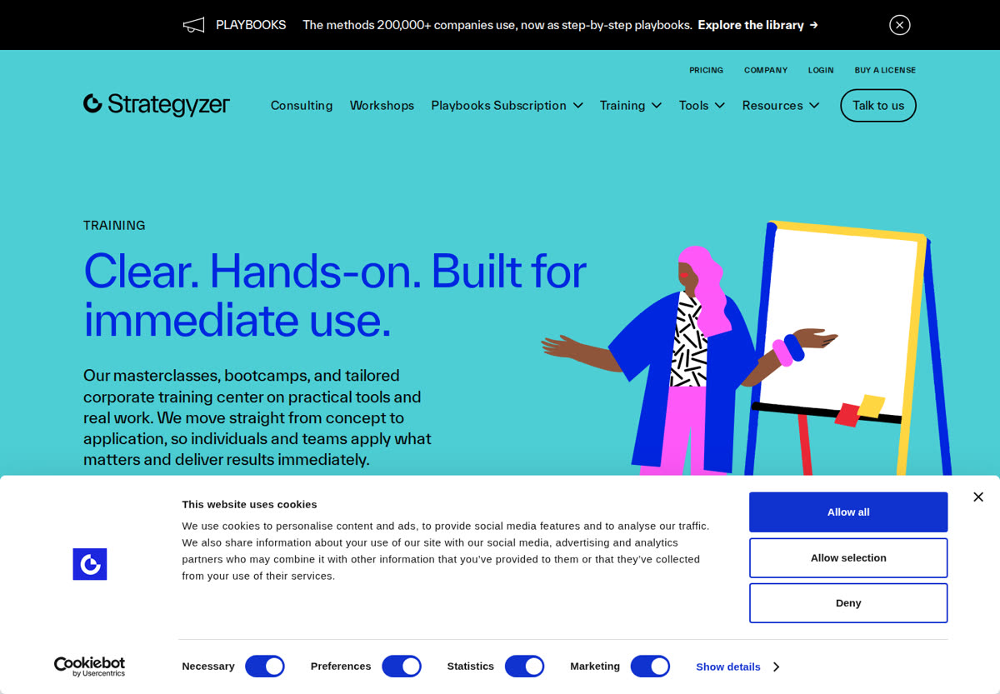
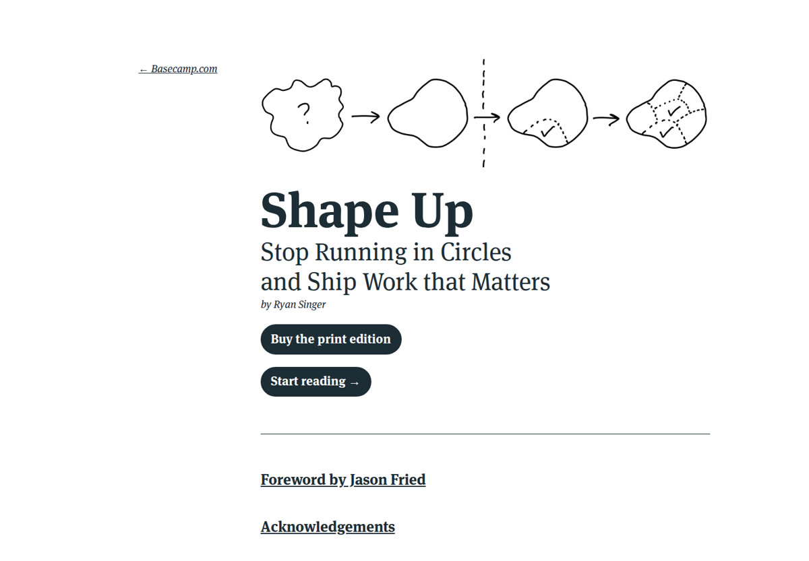
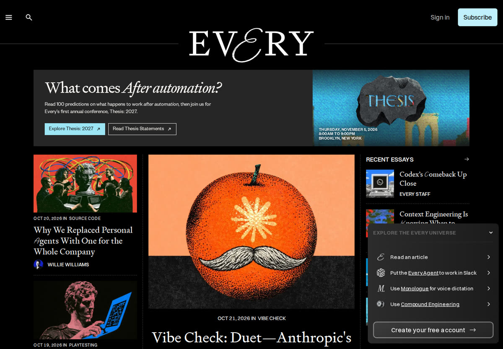

Снимки первых экранов, сделаны 22.10.2026. Тексты и структура страницы остаются те же, меняется только оформление. Ответь номером.

Консалтинг по внедрению ИИ для руководителей. Огромная живописная картинка, короткий крупный заголовок, много воздуха.

Русская редакционная типографика: путь программы нарисован как горный маршрут с флажками этапов и датами.

Тренинги авторов Business Model Canvas. Плотные цветные плашки, плоские иллюстрации, фото ведущих у доски.

Книга Basecamp о планировании работы. Рисунки от руки маркером, серьёзный шрифт с засечками, почти нет украшений.

Издание и консалтинг про ИИ в работе. Чёрный фон, выразительный шрифт с засечками, яркие иллюстрации-обложки.